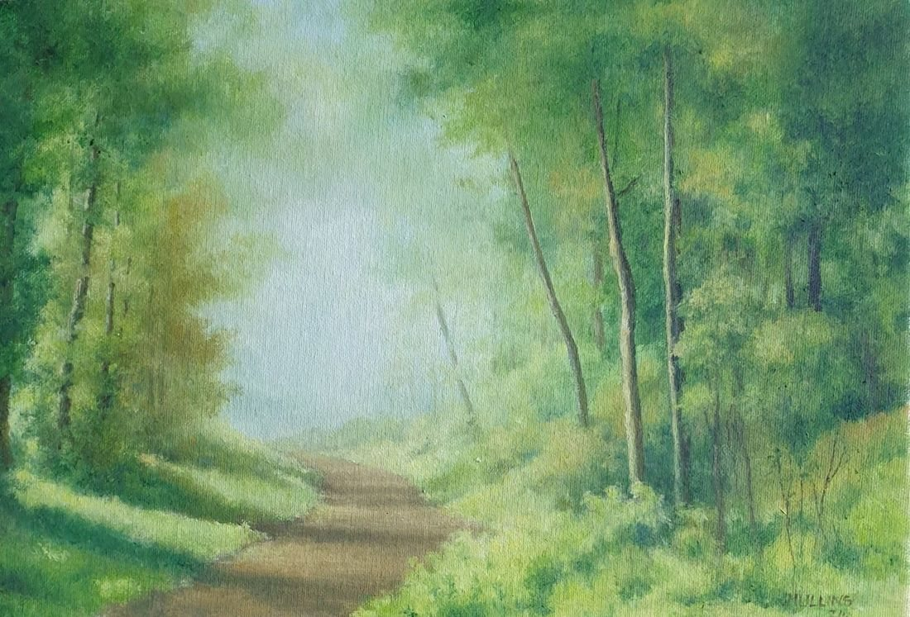

Green Landscape with Road
- Medium
- Oil on canvas board
- Size
- 27 × 40 cm
- Year
- 2024
- Price
- £200
- Catalogue no.
- 123
A quiet country road in spring, with sunlight softly lighting the way ahead.
Ask about this painting
A quiet country road in spring, with sunlight softly lighting the way ahead.
Ask about this painting